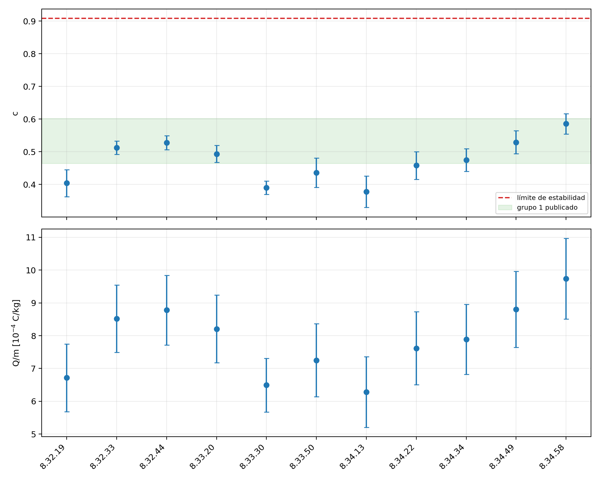
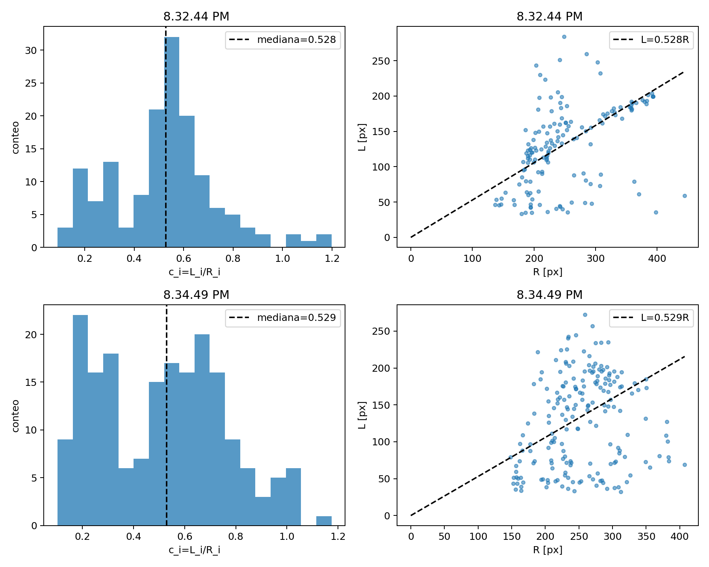

El resultado central del informe es razonable y el reanálisis obtiene valores compatibles. Los puntos siguientes no invalidan el experimento: muestran dónde una conclusión es más fuerte que la evidencia disponible y cómo hacer que el análisis sea más reproducible.
1. Medición, dispersión y error no son lo mismo
El valor de c
Para cada traza se calcula cᵢ=Lᵢ/Rᵢ. Luego hace falta un estimador del conjunto: media, mediana o un ajuste global.
Cuánto varían los cᵢ
La desviación estándar describe el ancho observado. Mezcla diferencias físicas, errores de segmentación, centro incierto y repetición de partículas.
Qué tan bien conocemos c
Debe reflejar cuánto cambiaría el resultado al repetir razonablemente el procesamiento y la medición instrumental.
2. Propagación de incertidumbres de Q/m
La relación utilizada es:
Si las variables son independientes, la propagación relativa de primer orden es:
En el informe, para el grupo 1, σc/c ≈ 0,069/0,533 = 12,9 %. Además, el radio aporta 2×0,50/8,90 = 11,2 % y la tensión aporta 24/1175 = 2,0 %. Sin incluir una incertidumbre de frecuencia:
Para Q/m = 8,7×10⁻⁴ C/kg, esto equivale aproximadamente a 1,5×10⁻⁴ C/kg.
El informe publica ±1,0×10⁻⁴ C/kg, cerca de 11,5 %. Ese número es menor que el error relativo de c por sí solo y no puede resultar de propagar simultáneamente todos los términos indicados.
No queda explícito qué incertidumbres entraron en el resultado final de Q/m. El redondeo tampoco explica la diferencia.
Propagué juntas la incertidumbre del análisis de imagen y las de r₀ y V. También guardé cada contribución por separado en el CSV.
3. ¿Se demostró una dispersión intrínseca?
El informe usa:
y despeja σintrínseca≈0,053 para el grupo 1. La ecuación es válida en un modelo particular: errores gaussianos, independientes, sin sesgo y con una varianza de medición conocida correctamente. El problema no es la resta cuadrática; es asumir que esas condiciones ya fueron verificadas.
En estos videos existen fuentes adicionales:
- una misma partícula aparece en muchos frames;
- el umbral puede cortar una traza de manera sesgada, no gaussiana;
- la incertidumbre del centro es común a muchas trazas y genera correlaciones;
- la selección manual favorece ciertas trazas;
- pueden existir diferencias entre frames por iluminación o movimiento colectivo.
4. El problema de contar trazas como datos independientes
El informe informa 86 y 113 trazas. Eso no significa necesariamente 86 y 113 partículas ni igual cantidad de observaciones independientes. Si una espora aparece en diez frames, aporta diez valores correlacionados.
| Remuestreo | Qué supone | Consecuencia |
|---|---|---|
| Bootstrap por traza | Cada traza es independiente. | Puede subestimar el error. |
| Bootstrap por frame | Conserva juntas las trazas de un cuadro. | Mejora usada en el reanálisis. |
| Bootstrap por partícula | Requiere tracking entre frames. | Opción preferible para estudiar variabilidad física. |
5. La intervención manual y el umbral
El informe dice que se aplicó un umbral fijo de 40 y después una persona “acepta, descarta o corrige”. En el frame 460 del video de las 8.34.49, que coincide con la Figura 5, la traza dibujada como continua en la interfaz queda dividida en varios componentes al aplicar literalmente el umbral 40. La corrección manual fue entonces parte sustancial de la medición.
Dos personas pueden unir extremos diferentes o aceptar conjuntos distintos. Mantener fijo el umbral no elimina ese sesgo.
Usé un umbral auxiliar de 26 para recuperar continuidad, un área mínima adaptada y una línea media cuadrática. La regla queda escrita y se aplica igual a todos los videos.
La mediana de cᵢ sustituyó a la media porque los fragmentos residuales producen principalmente valores bajos y una cola asimétrica. La mediana reduce esa influencia sin elegir trazas mirando el resultado deseado.
6. El centro de la trampa: qué sí se reprodujo
Con todas las detecciones automáticas, el ajuste libre del centro encuentra mínimos espurios: puede mover el centro lejos y compensarlo cambiando la pendiente. La selección manual original no está guardada, así que no es posible reconstruir exactamente el conjunto que generó los centros publicados.
7. Qué haría en una versión más fuerte
- Guardar las selecciones manuales originales como máscaras o tablas, junto con el identificador de frame.
- Hacer tracking de cada espora para reconocer mediciones repetidas.
- Ajustar un modelo jerárquico: errores de traza, variaciones por frame y un valor por partícula.
- Estimar simultáneamente centro y c con validación cruzada entre bloques temporales.
- Hacer análisis de sensibilidad predefinido para umbral, filtros y definición de longitud.
- Reportar por separado incertidumbre estadística, sistemática e instrumental.
8. Resultado comparativo

Los dos archivos usados para la comparación principal dieron c=0,528±0,022 y c=0,529±0,035, compatibles con 0,533±0,069 y 0,524±0,060 del informe.
